Moments appear hazy when I try to recall them. Did I do this in 2024 or 2025? kept coming up more often than I expected while writing this review. Photographs on my phone turned out to be one of the most reliable sources, making me feel a little less guilty about taking them. A post-workout selfie, an aesthetic photo of a book I was reading. All meaningful data points. Pictorial notes.
I love roundups! I definitely enjoy writing my own, even if it is 3 months after the socially acceptable date, and I enjoy reading others. Which made me wonder, why?
Maybe because my mind is biased towards the whole. It itches to gather fragmented moments and make something beyond their sum [1]. I also find it to be a perfect opportunity to write and share all that I have observed, paid attention to, and is worth telling [2].
Last year was mostly regular, but a few deviations that broke the pattern, are the ones that stayed. Joining a group strength class, doing a fiction writing workshop at MAP, hosting friends and not just family at my home, doing physical puzzles instead of just usual NYT crosswords or Wordles.
I have written and drawn it, to capture all my aimless curiosities, that felt random at start, but gave a lasting joy of crossing the unknown [3].
Here is a data portrait of 2025. Each line represents activities that shaped my days, either as daily rituals or as small new sources of joy.
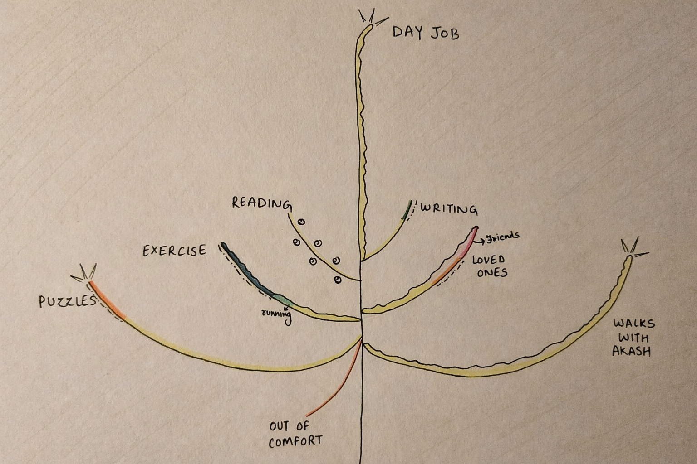
I joined MyThirdSpace for group strength and training exercises, lifting low to medium weights. It was so hard initially to push myself, post work, to get ready and workout with women who were so much better and at ease with lifting weights than me. But gradually I started feeling activated, stronger, and looked forward to going to these classes.
Arthritis and Rheumatoid arthritis has descended from my nani (maternal grandmother) to my mother. I have seen them both in unspeakable pain. Hence, lifting weights is one of the only options now to reduce my risk or impact.
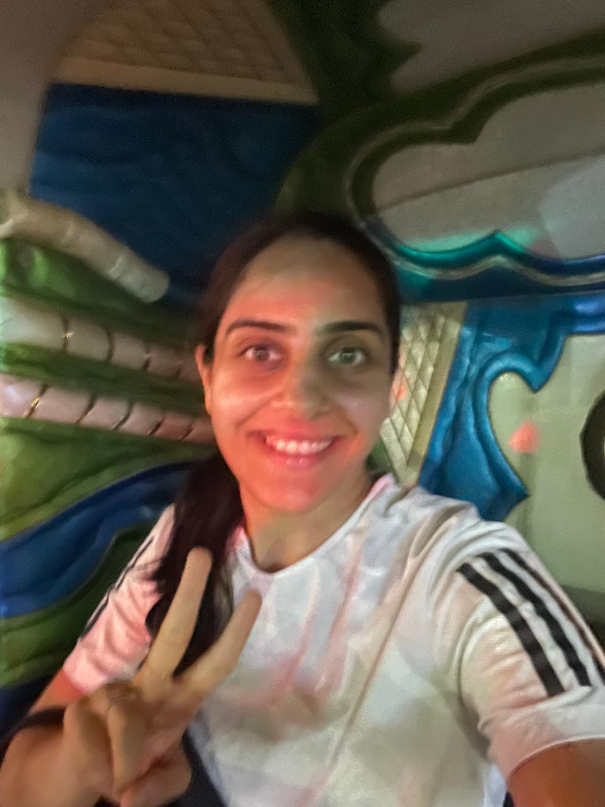
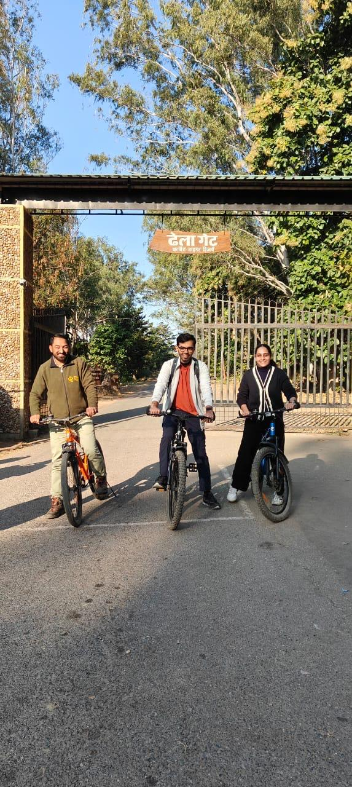
Did strength training for 35 days at MyThirdSpace, 50 kms running, and 11 days of outdoor sports like swimming, badminton, and cycling - small steps that that I want to turn into a more consistent practice in 2026, and strength for the long run.
There is something uniquely terrifying, and exhilarating, about reading your own raw, on-the-spot fiction out loud to strangers. This fiction writing workshop was conducted by the editor-in-chief of Out of Print magazine, alongside an exhibition of Ram Kumar’s writings and paintings at Museum of Art and Photography in Bangalore. It was one of the most joyful things I did this year. I wrote two stories - A Dysfunctional Friendship and In the Museum, not published yet.
Writing these, reading Ram Kumar’s stories, and hearing fellow participants narrate their writing made one thing clear- even the most universal themes like nostalgia, love, despair, family dynamics, can hook the reader if written with a distinct personal context and style.
P.S. I wrote more in my personal journal than writing publicly. I tried writing the first thing in my journal as I woke up. It really helped me stay away from my phone in the early morning hours. I only published one blog in 2025, my first travel log. Took excruciatingly long time to edit it because I wanted it to be perfect rather than done. It is so far the least read and appreciated blog on my site.
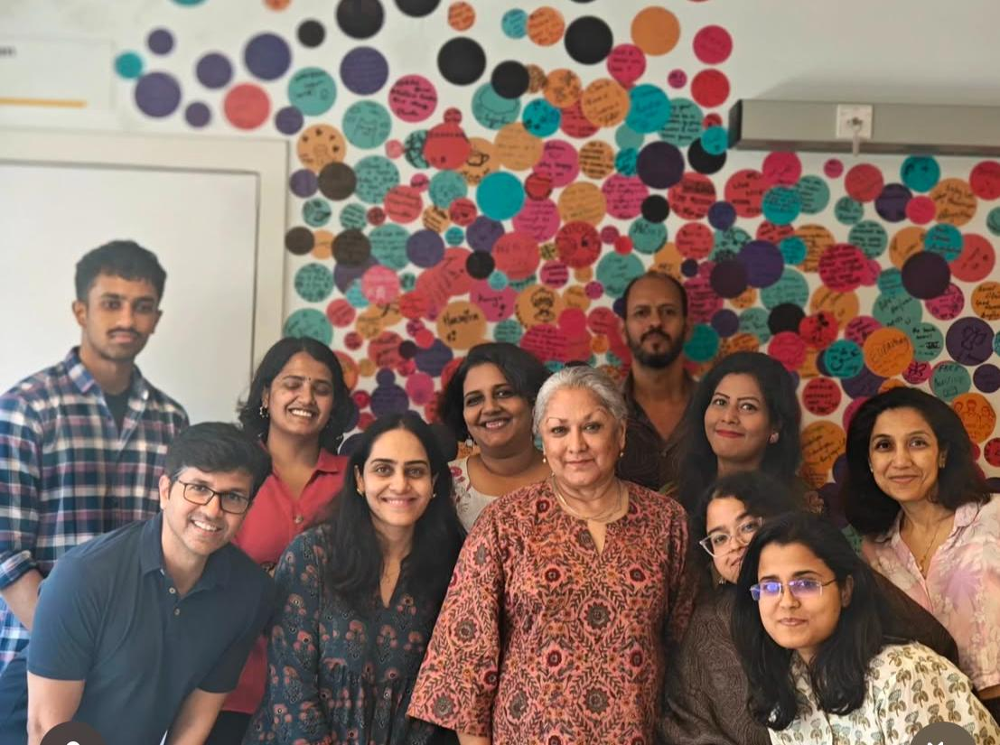
A two day fiction writing workshop conducted by Indira Chandrasekhar at MAP, Bangalore.
One of the most consistent acts of last year was reading each night before going to sleep. It was an unintentional ritual. Did not start because it is supposedly good, did not continue just for the sake of regularity. I read the following varieties and my favourite in each:
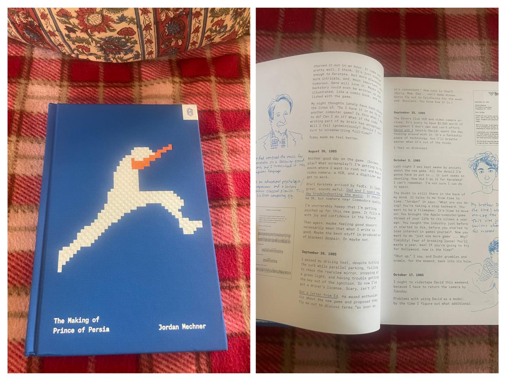
My fav. coffee table book in 2025: The Making of Prince of Persia by Jordan Mechner, the creator of this game and many others.
Solving puzzles helps me relax. Doing NYT puzzles with Akash became a breakfast ritual. We did 204 Wordles, 200 mini crosswords and several others. I did two physical puzzles, 500 piece each, which I solved manically. But building the F1 Ferrari Lego, even with an instruction manual, was undoubtedly absorbing! It was a 275 piece set and putting it together, observing how each piece was designed, and made to fit was just delightful.
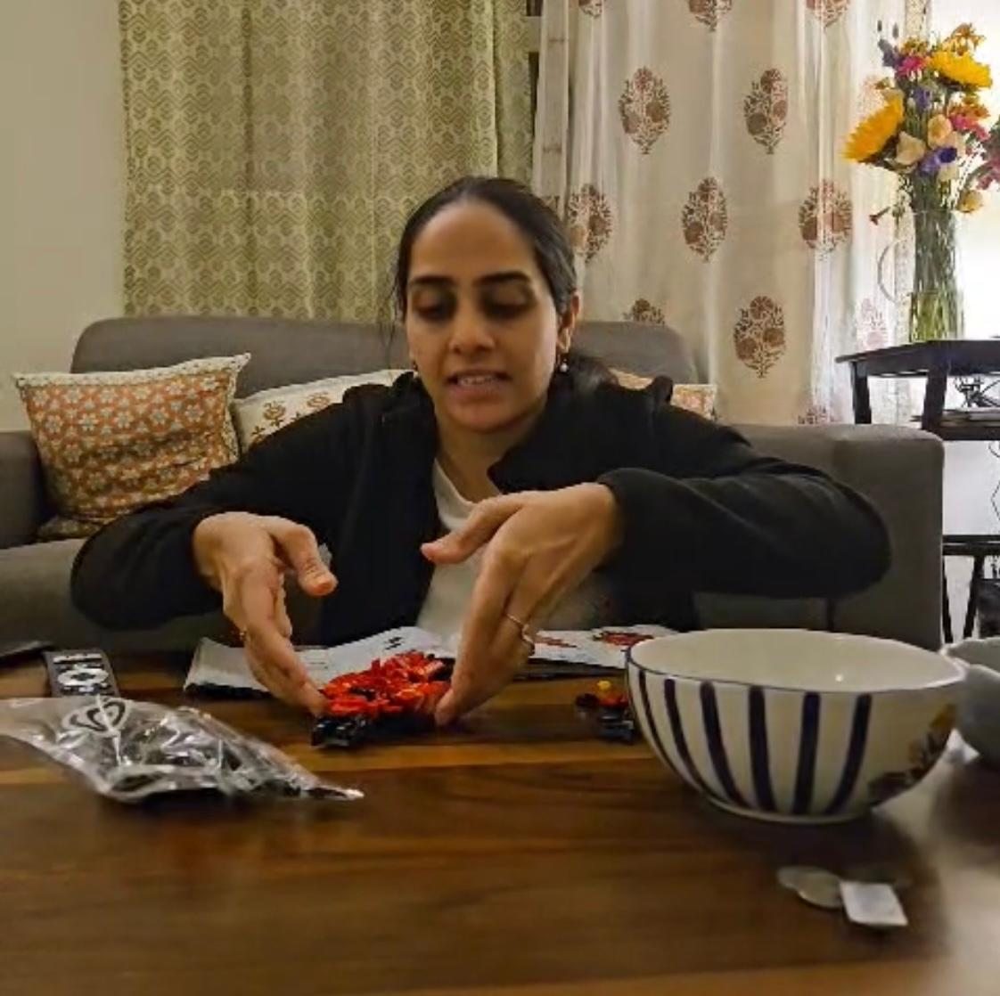
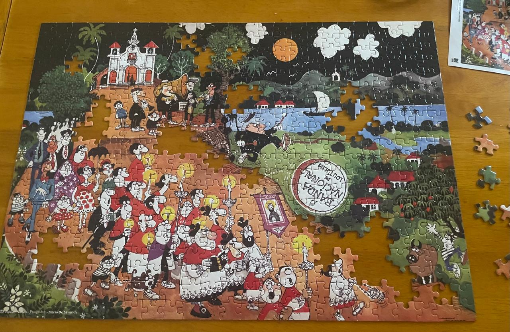
I am always more comfortable with family/cousins than friends. I also have very few friends. Hence made an effort to meet, stay and spend time with them, and build new bonds.
Out of the 28 days spent on vacation — swimming in Koh Samui beaches, and travelling by train to Hampi, and exploring the ancient Vijaynagar ruins, were two unforgettable experiences.
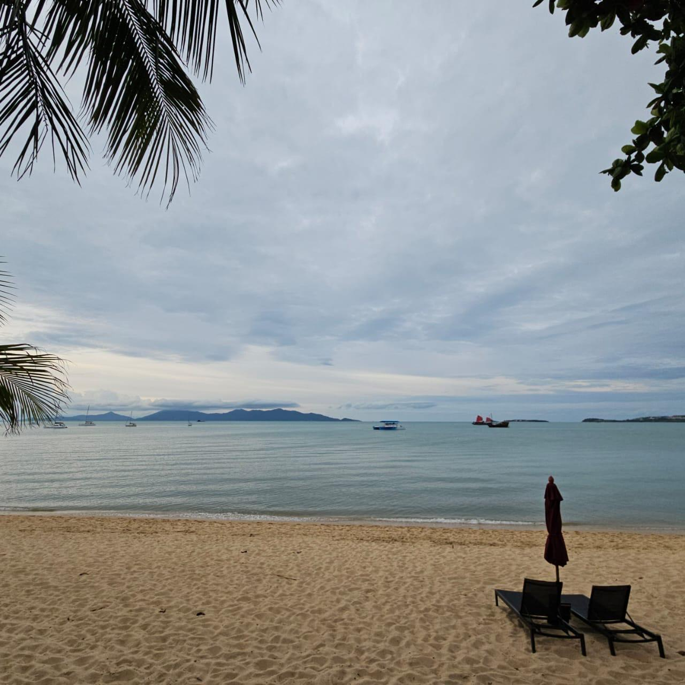
A daily and cherished ritual, everyday, is to walk in the green-covered by-lanes of Indiranagar with Akash. The most bizarre, whacky ideas, silly dreams, and day-to-day chores get assigned, dismissed, or debated about.
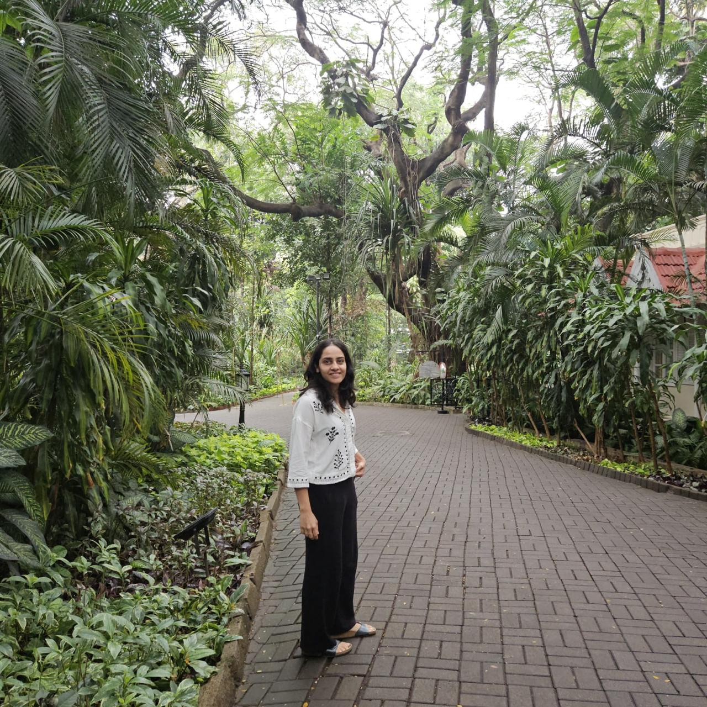
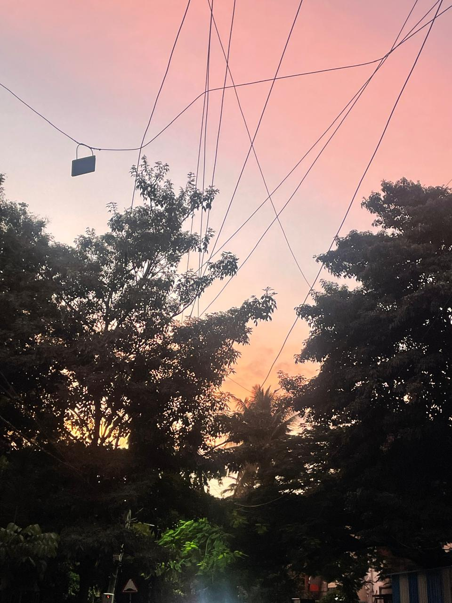
On some days, just the simple act of work where you — get up, meditate or stare at the wall, shower, get neatly dressed, eat breakfast, make your coffee, taste it and be wowed, go to office or sit at your home desk, do work, with people you like, finish your to-do’s — can make for a wholesome good day. Just like a simple butter toast and a glass of good cold milk.
Presenting my data platform charter roadmap to Clari’s CTO, spotlighting our team’s work in Clari’s all-hands alongside Andy, and building Ask Clari were were some of the days that felt just as full and satisfying.
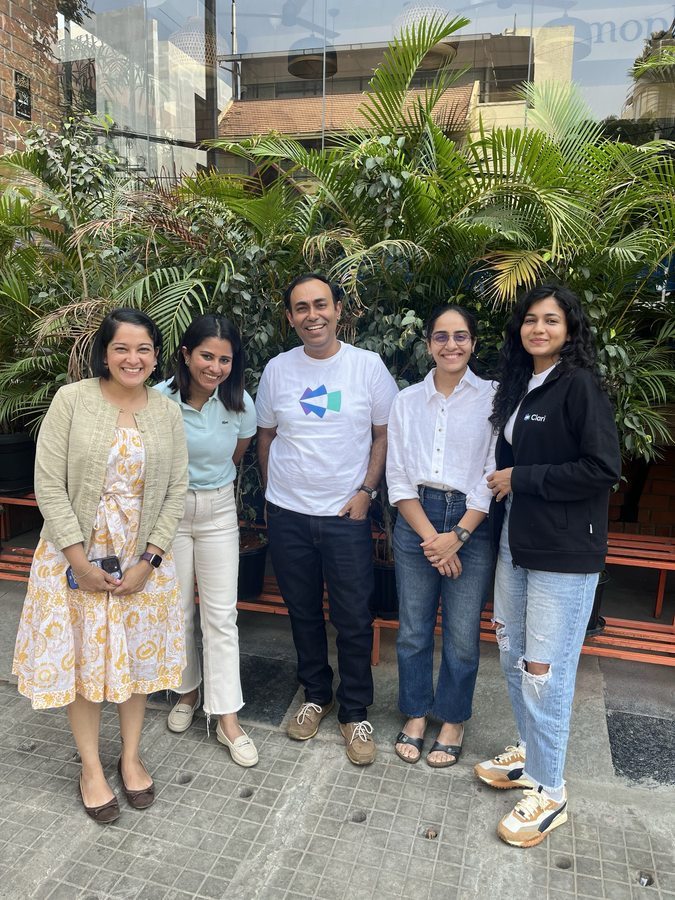
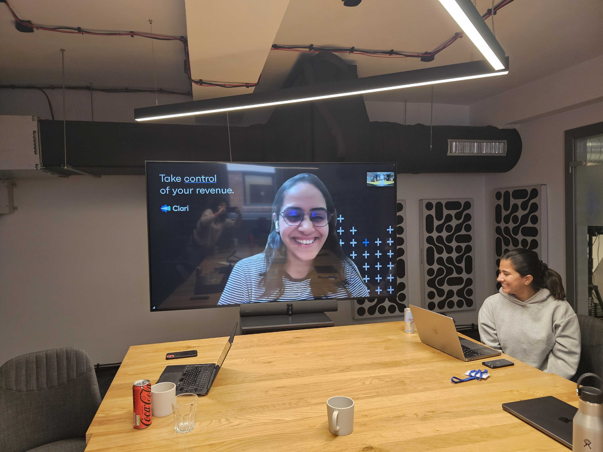
I lost a piece of my childhood when I lost my amma (my paternal grandmother) in Nov’2025.
Her eyes used to light up, her voice filled with joy calling my name, whenever I was back home. She was like an old friend, always willing to hear my stories, complaints, opinions from school to college to work, and everything in between. I must be 5 yrs old when she enrolled me in a Kathak school, started teaching me classical music on her harmonium, and I loved every bit of it, still do. She had a flair for life like no other, a fine and distinct taste in cooking, hosting dinners, jewellery, clothes, music, knitting, and she was proud of it all. She loved life, and all her people in it! I miss her and always will.
In the next few years, I want these branches in my yearly data portrait to grow longer and diversify, following my curiosities, untethered by the safety cover of life’s standard goals or objectives.
To be liberated, dive toward doubt with great eagerness, given to be surprised. Or remain ossified, a safe distance from alive. — Maria Popova
References
[1] Gestalt psychology: “The whole is other than the sum of its parts.” The idea that our minds naturally organise fragmented experiences into unified wholes. “The Whole is Simpler Than Its Parts” is also a biographical book on Willard Gibbs, a scientist, written by a poet.
[2] Mary Oliver: “Instructions for living a life: Pay attention. Be astonished. Tell about it.” From Sometimes (2008).
[3] “In this sense, we have abandoned the false security of the objective to embrace the wild possibility of the unknown… such a search for novelty still feels unanchored and perhaps even almost random.” : Kenneth Stanley & Joel Lehman, Why Greatness Cannot Be Planned (2015).